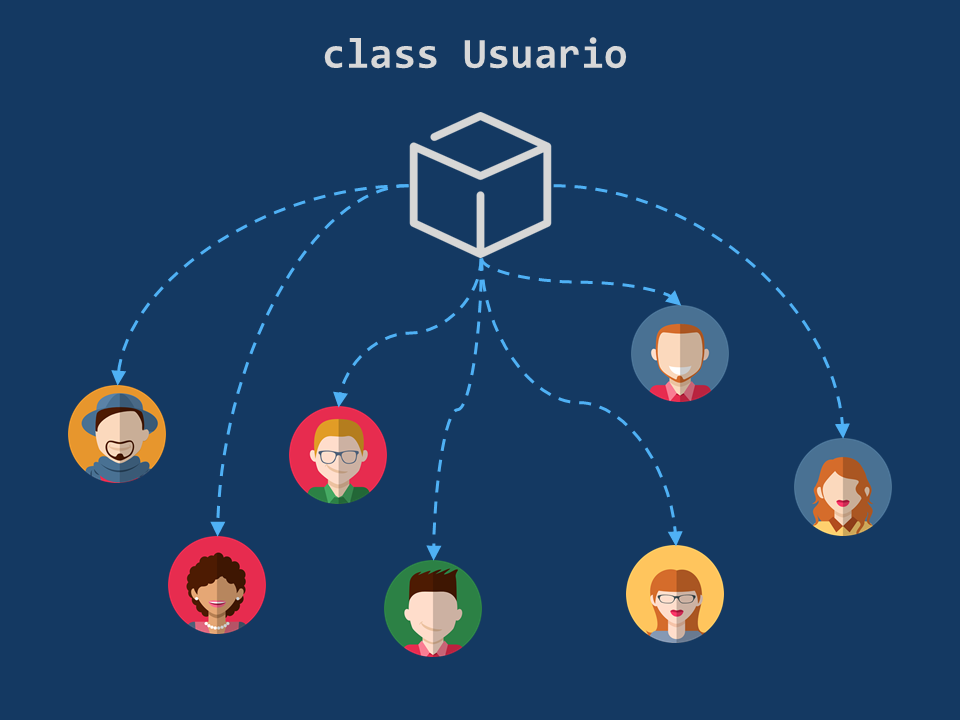
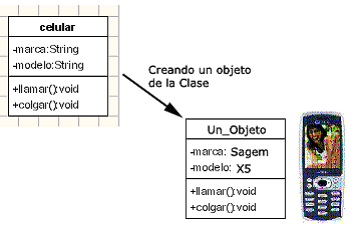

La programación orientada a objetos (POO) es una forma especial de programar, más cercana a como expresaríamos las cosas en la vida real que otros
tipos de programación, es paradigma que usa objetos y sus interacciones, para diseñar aplicaciones y programas informáticos.
Este tipo de programación es muy distinta a la programación estructurada, debido a su enfoque y a sus propósitos, además de que disminuye los errores y
promociona la reutilización del código.
Basa su resolución de problemas en la creación de objetos que son unidades con características y atributos con datos que ayudarán a resolver dichos
problemas.

- Clase : declaraciones u definiciones de las propiedades y comportamiento de un tipo de objeto concreto. La instanciación es la lectura de estas
definiciones y la creación de un objeto a partir de ellas. También se les conoce como el nombre de tablas o estados.
- Objeto : Entidad provista de un conjunto de propiedades o atributos (datos) y de comportamiento o funcionalidad (métodos) los mismos que
consecuentemente reaccionan a eventos. Se corresponde con los objetos reales del mundo que nos rodea, o a objetos internos del sistema (del programa).
Es una instancia a una clase.
- Abstracción : Denota las características esenciales de un objeto, donde se capturan sus comportamientos. Cada objeto en el sistema sirve como
modelo de un “agente” abstracto que puede realizar trabajo, informar y cambiar su estado, y "comunicarse" con otros objetos en el sistema sin revelar cómo
se implementan estas características. Es la clave del análisis y el diseño, ya que se puede modelar la realidad o el problema a resolver.
- Encapsulamiento : Reunir todos los elementos que pueden considerarse pertenecientes a una misma entidad, al mismo nivel de abstracción.
Esto permite aumentar la cohesión de los componentes del sistema.
- Principio de ocultación : El aislamiento protege a las propiedades de un objeto contra su modificación por quien no tenga derecho a acceder
a ellas, solamente los propios métodos internos del objeto pueden acceder a su estado.
- Polimorfismo : Comportamientos diferentes, asociados a objetos distintos, pueden compartir el mismo nombre, al llamarlos por ese nombre se
utilizará el comportamiento correspondiente al objeto que se esté usando; o, dicho de otro modo, las referencias y las colecciones de objetos pueden
contener objetos de diferentes tipos, y la invocación de un comportamiento en una referencia producirá el comportamiento correcto para el tipo real
del objeto referenciado.
- Herencia : Los objetos heredan las propiedades y el comportamiento de todas las clases a las que pertenecen. La herencia organiza y
facilita el polimorfismo y el encapsulamiento permitiendo a los objetos ser definidos y creados como tipos especializados de objetos preexistentes.
Estos pueden compartir (y extender) su comportamiento sin tener que volver a implementarlo.
- Recolección de basura : La recolección de basura o garbage collector es la técnica por la cual el entorno de objetos se encarga de
destruir automáticamente, y por tanto desvincular la memoria asociada, los objetos que hayan quedado sin ninguna referencia a ellos.